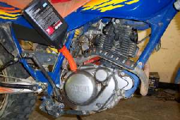
¶ Changing your oil sounds simple enough, but even the so called "Experts" can goof it up. I was working in a Honda shop in Salt Lake City, Utah around 1970, when this happened. A new shop opened and we were not too happy. There already were two Honda shops in the city. But, they paid Honda a bunch of money, or so we thought, and there they were. They sold an SL125 Honda single, supposedly serviced it, and out the door it went. Only trouble was they didn't put any oil in it. So it ran a few miles and seized up. The customer brought it back to them and got another bike. So what did they do with the bike? They put some penetrating oil down the spark plug hole and got it started again. They then SOLD IT AGAIN, WITH NO OIL IN THE CRANKCASE! Back it came, but at least now the engine was so trashed that they couldn't sell it again. Truly amazing, huh?
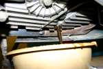 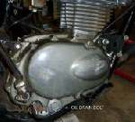
If your engine uses a wet sump design, the first step is to place a container to catch the oil under the oil drain plug of your engine. Make sure the container is big enough to hold all the oil. Look in your owners or shop manual for the amount of oil your engine holds. The oil drain plug will be on the bottom or side of your engine. Some engines, like the old Yamaha 650cc twins, have two drain bolts.

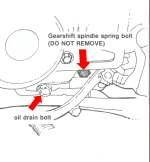
It's best to drain the oil when the engine is good and hot, however, I usually wait till the engine cools down a bit or I just run it enough to warm the oil a bit and get it mixed up good. So call me a wimp, I simply don't like getting burned by hot oil.
Look at the oil drain plug, once you have it out. Some of them have small magnets in them to catch any steel metal particles from the engine. These plugs can be special bolts with a flange head or an allen head bolt with a flange head. Depending on how they are made, the allen head ones can be quite strong or very weak. I took this one out of a 1996 Triumph three cylinder. It's design is very weak. This one is from a BMW twin and it is quite strong. Almost all oil drain bolts will be found to be in there really tight. This is because there is a lot of heat down there and just about everybody torque those puppies down really hard. When you reinstall the oil drain bolts, look up the tightening torque in the shop manual and use a torque wrench to put them in. If you can't find a torque for the oil filter drain bolt, measure the bolt size and use Standard Bolt Torques. This will save a bit of headache in the future.
Using the right torque on both the oil drain bolt and the oil filter bolt can be a lot more important then you might think. On a lot of bikes, there simply is not enough metal around the hole to allow the use of a thread repair kit. Sometimes you can use a bolt that is just a bit bigger or you can use an expanding plug, but the best thing is to not strip it out in the first place. You will find many drain plugs over torqued and absolutely locked in. For these, you may have to make a special Reinforced Socket Wrench.
On dry sump engines, you must find the oil tank and then the drain plug on that tank. There really only two types of tanks.
- The oil is carried in the frame of the motorcycle.
- A small, separate tank mounted somewhere on the frame.
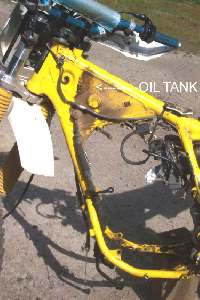 Frame Oil Tank. |
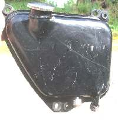 Separate Oil Tank. |
There are two types of frame oil tanks. The Japanese use the upper part of the top frame backbone and the front downtube to hold the oil. The Oil Drain Bolt is on the lower part of the front downtube.
The British use the top frametube, which bends down forming the rear frametube. The oil is drained at the bottom of this rear frametube.
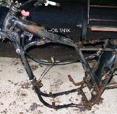 Japanese Frame Oiltank. |
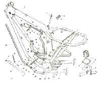 Triumph Frame Oiltank. |
I'm sure there are others, but you get the idea.
After draining the hot, or warm, oil you will want to give a thought to the oil filter. I always like to change the filter because it usually holds a quarter pint or so of old oil. You don't have to and there's not a lot of old oil in there, but... !
Oil filters come in a number of styles.
- Screw on Cartridge
- Internal or
- External
- Internal or
- External
- Coarse Screen or
- Fine Screen
- Clutch Center or
- Cup
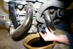 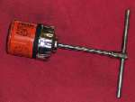
Usually the cartridge is located, externally, on the front or bottom of the engine. A few engines like the BMW K series (Brick) have the cartridge located internally, in the oil pan. You can remove a cover and get to it if you have the right tool. if not, you must remove the oil pan and use a strap wrench. Screw the filter in till the rubber gasket touches the base and then NO MORE then 1/2 turn more. Check your shop manual.
The drill is this. Clean the oil filter base on the engine. Dip your finger in some fresh oil and lubricate the rubber ring on the cartridge. Then thread it on until the rubber ring contacts the oil filter base on the engine. Now turn the cartridge 3/4 to one turn more or about 13 -15 Ft. Lbs. of torque, and you are done. DO NOT OVER TIGHTEN. If you over tighten the cartridge it will distort the rubber gasket and cause the filter to leak or even fail completely. Again, check your shop manual. The new Harley Davidsons want you to use your hand and turn it in 3/4 of a turn after the rubber gasket touches the base.
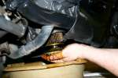 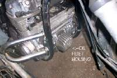

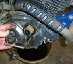
Interestingly enough, The same thing will happen to you if you reject Jesus and try another way for salvation. There is only one way this filter goes in, and there is only one way to salvation. Any other way will not work. Even if you really, really, sincerely believe another way will work, it will not. (John 14:6) OK, OK, enough preaching, just put the filter in the right way. If you are unsure, check the shop manual. Each engine is different. The Shop Manual will steer you right.
I had a customer who did this once. He changed his oil and filter and put the filter in backwards. He started the engine and let it idle for about five minutes. The engine then sized. He then brought it to me. I got the head off and found the rocker arms were literally welded to their shafts. We had to cut the rocker arms and shafts out with a cutting torch. Very difficult. Almost ruined the head. Make sure you put it on the right way.
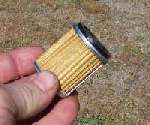
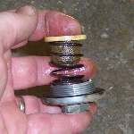
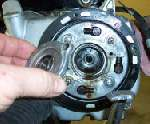 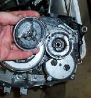

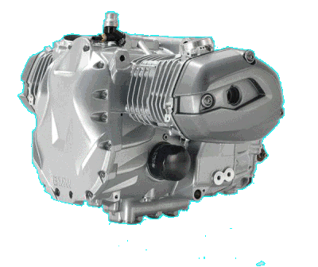 |
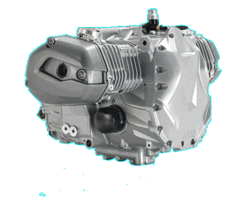 |
Copyright © 1999-2007 dansmc.com. All rights reserved.